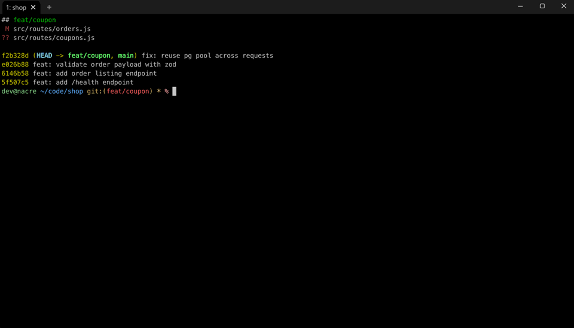
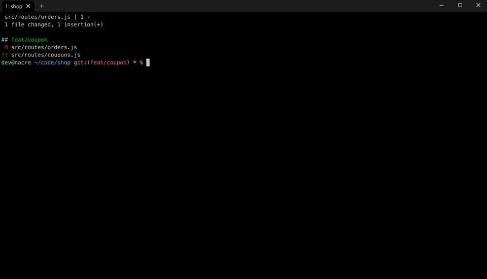
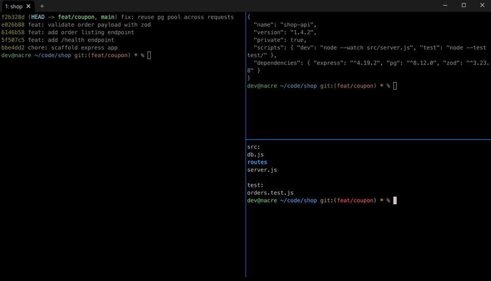
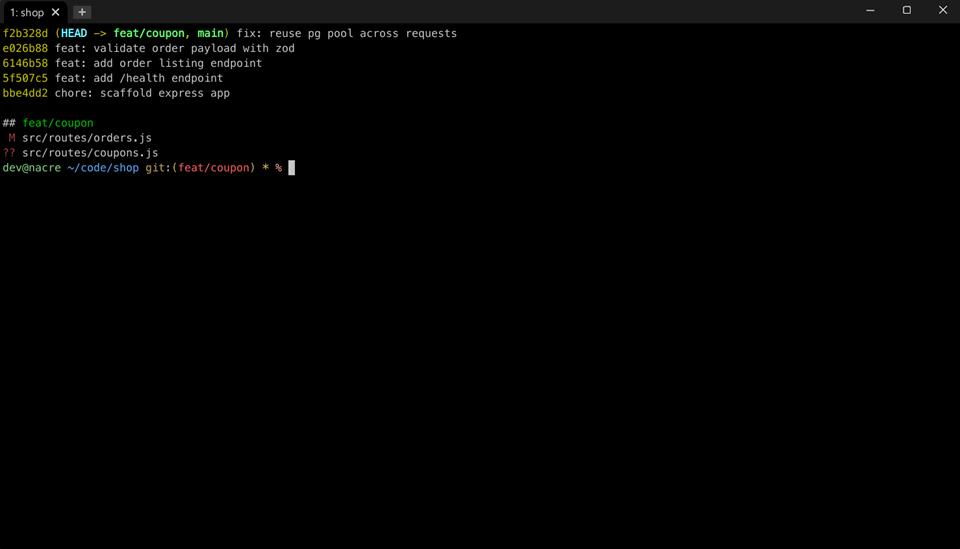
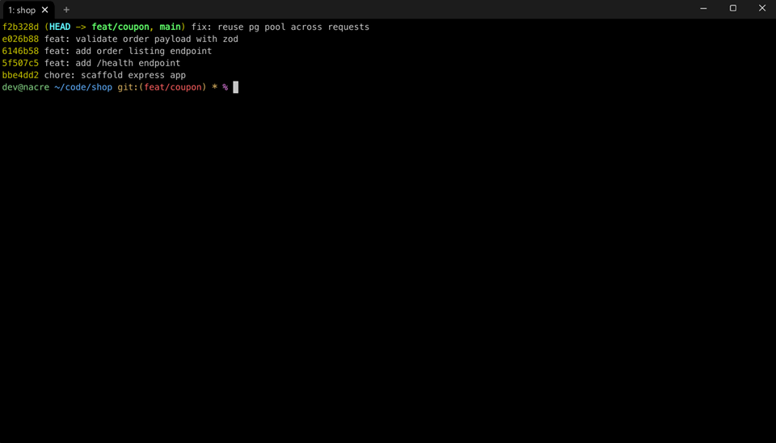
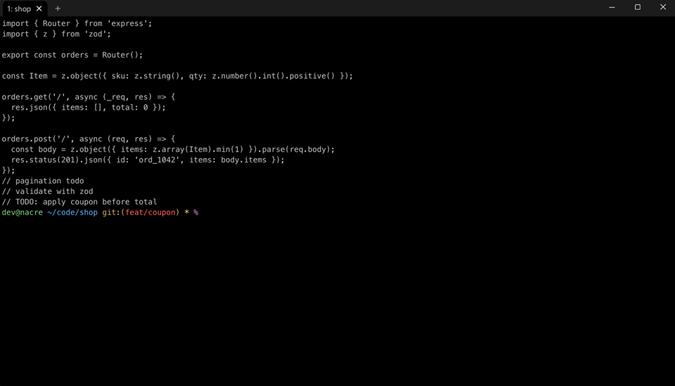
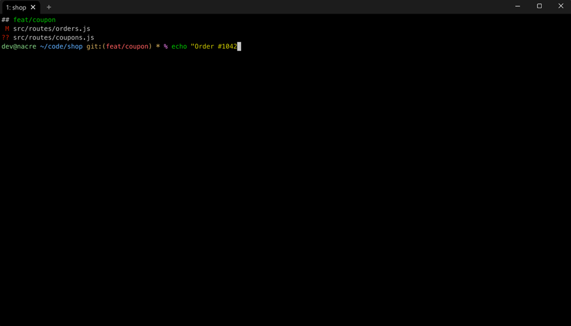
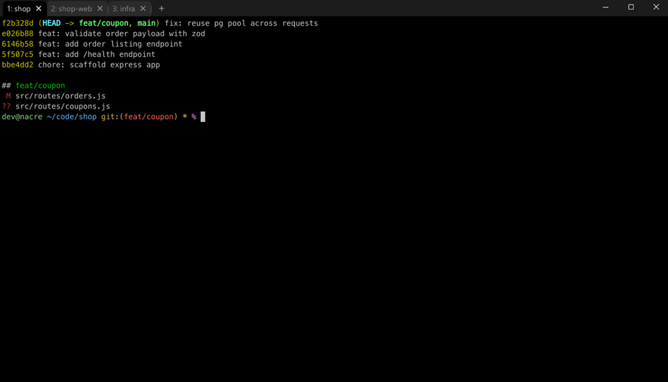
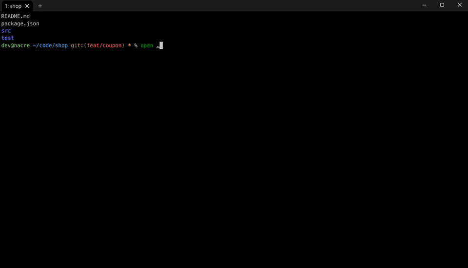

Nacre
Windows 11에서 macOS iTerm 같은 터미널 환경을 구성합니다.
WSL(Ubuntu) 기반입니다. WSL이 없으면 함께 설치하고, 이미 있으면 그대로 사용합니다.
설치
PowerShell에서 실행하세요.
irm https://nhahan.github.io/nacre/install.ps1 | iex
기능
-
화면 좌우 분할 Ctrl+Shift+V

-
화면 상하 분할 Ctrl+Shift+H

-
분할 화면 이동 Ctrl+Shift+방향키

-
새 창·분할·닫기 메뉴 탭바 + 버튼 우클릭

-
복사 / 붙여넣기 Ctrl+C / Ctrl+V

-
글자 크기 조절 Ctrl+마우스 휠

-
줄바꿈 Shift+Enter

-
탭 이동 Alt+1~9

-
폴더·파일·URL을 Windows에서 열기 open 명령
